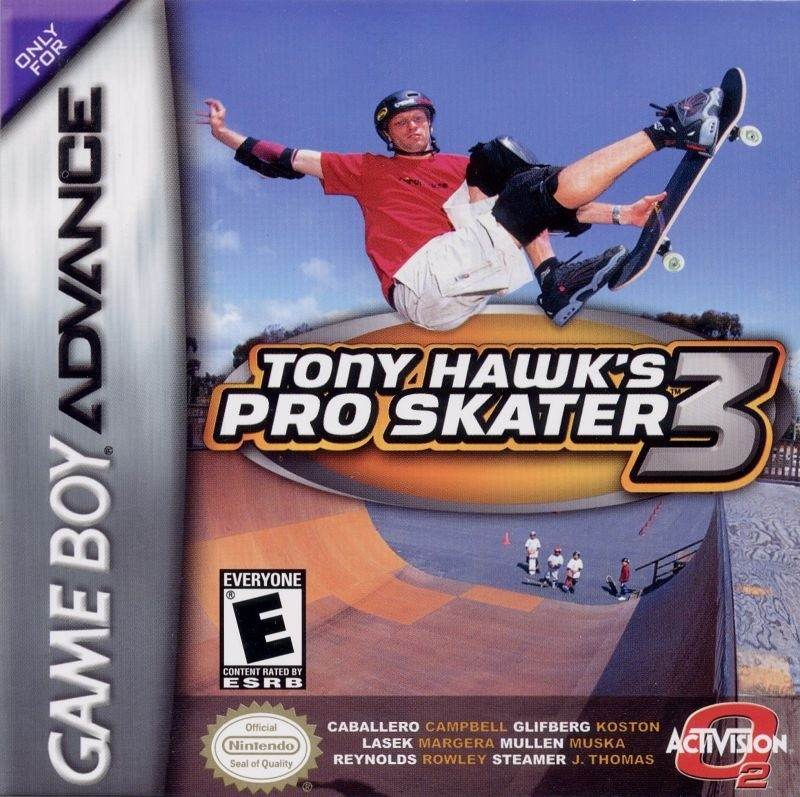

PRESERVANDO CLÁSSICOS, UM PIXEL DE CADA VEZ
Grandes jogos.
Novas palavras.
A gente acredita que uma boa história merece ser entendida. Traduzimos clássicos dos videogames com cuidado, respeito e paixão.

DESTAQUEPROJETO EM DESTAQUETony Hawk’s Pro Skater 3GAME BOY ADVANCE 100% TRADUZIDO
✳✳
INSERINDO MEMÓRIAS NO CARTUCHO...▼SCROLL PARA CONTINUAR
NOSSO ACERVO
Projetos em cartaz
Traduções feitas com carinho para você revisitar seus jogos favoritos.
07JOGOS
NO ACERVO
NO ACERVO

A COMUNIDADE FAZ PARTE
Curte retrô? Chega junto.
Troque ideia, acompanhe os projetos e ajude a manter esses clássicos vivos.